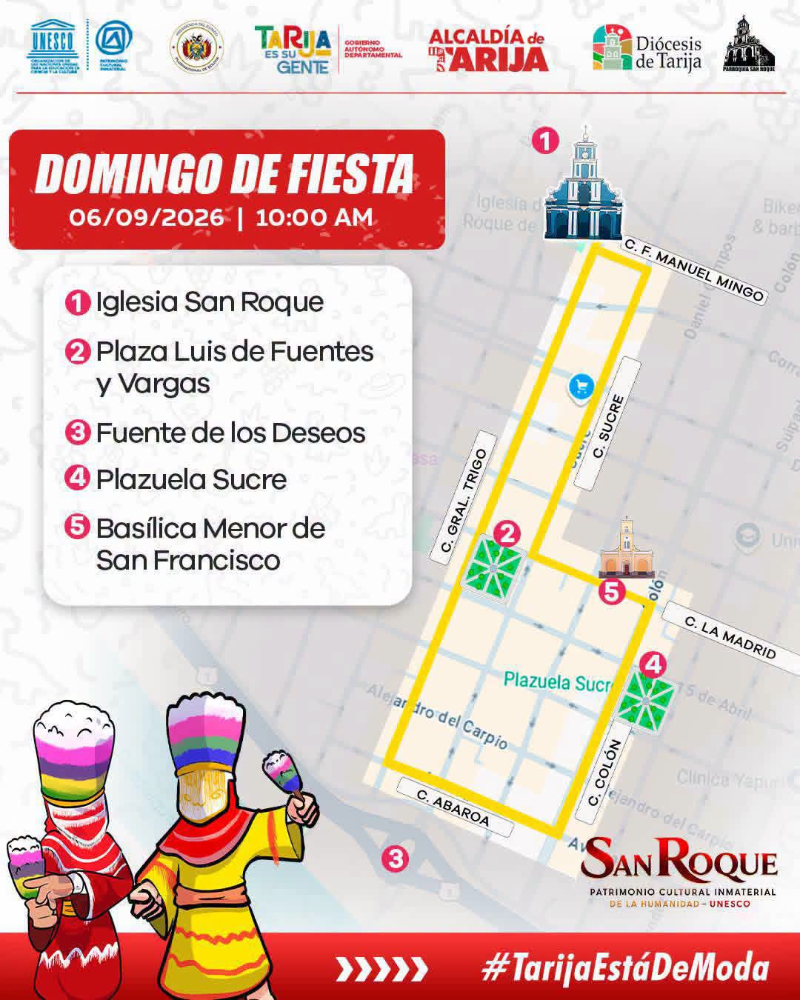
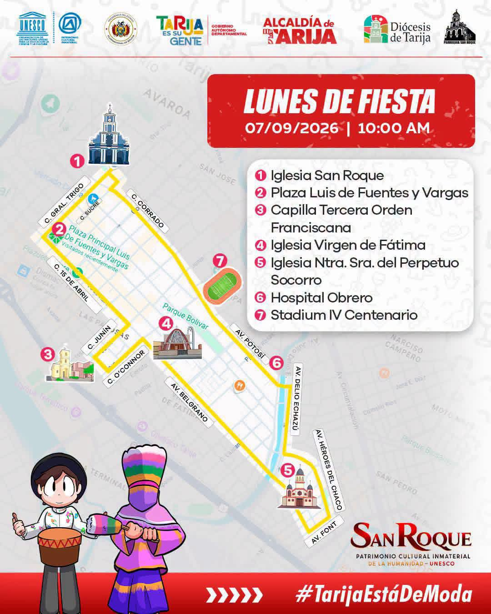
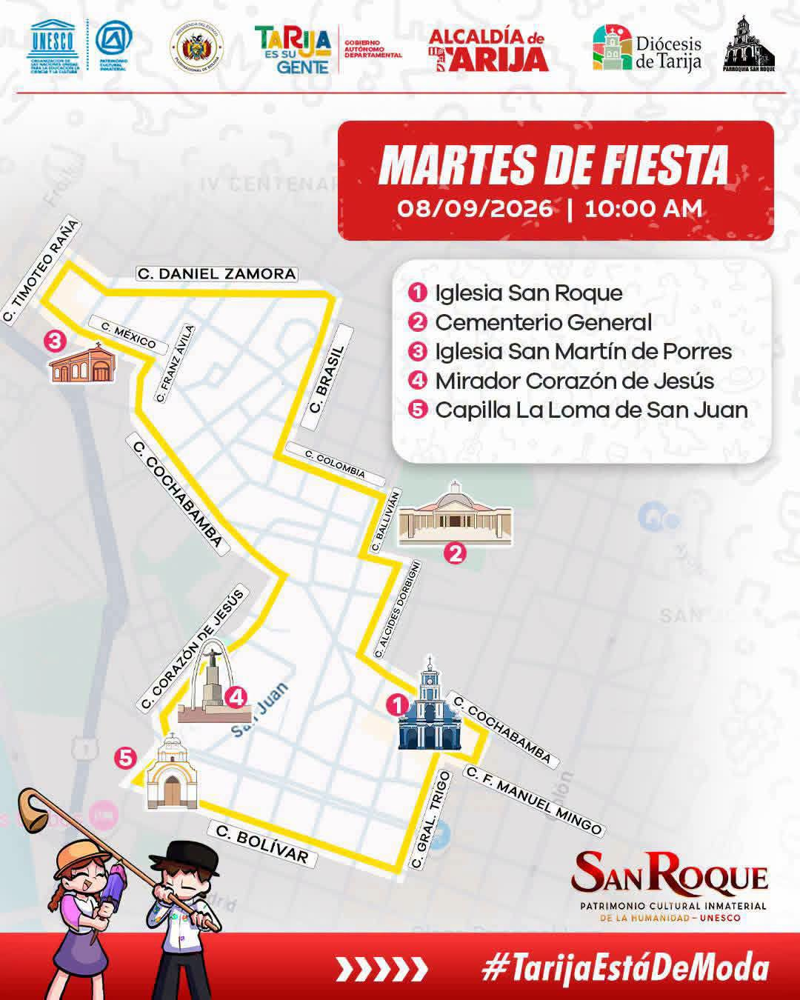
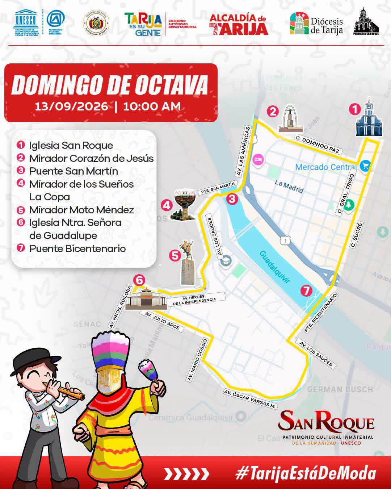
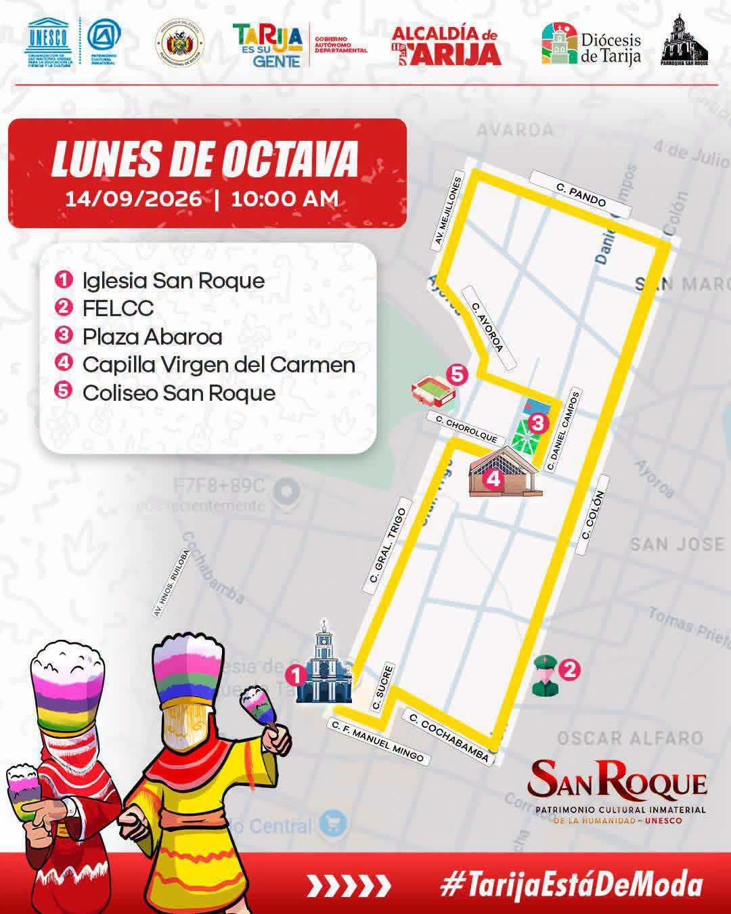
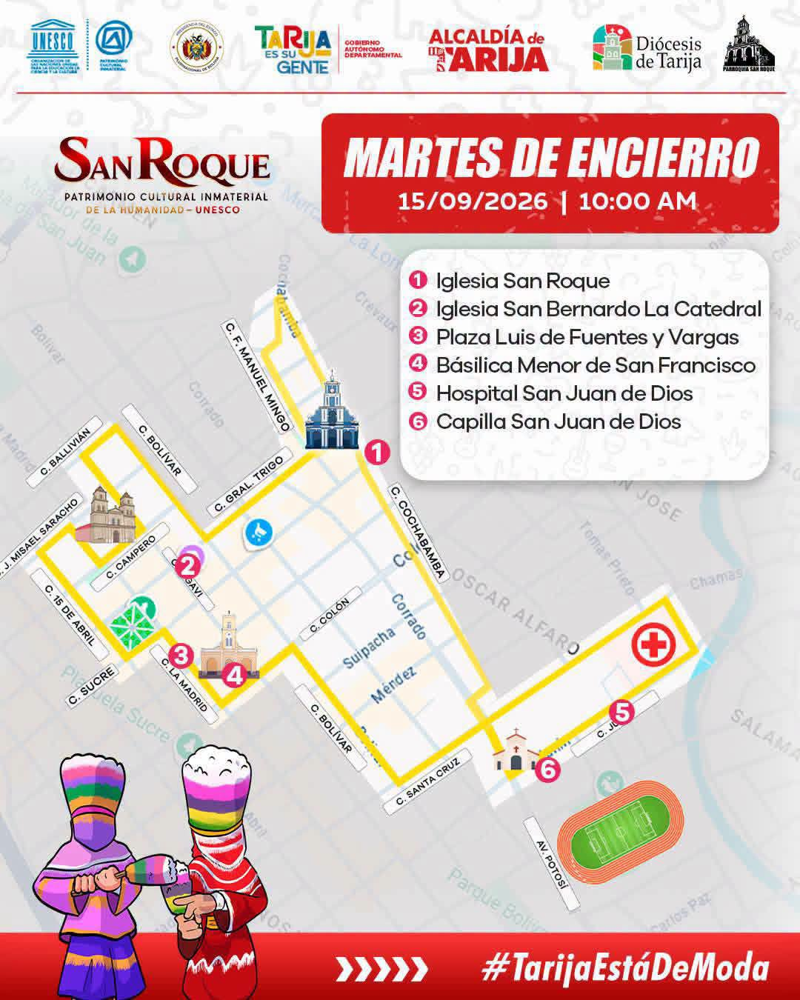

Fiesta Grande de Tarija
Rutas de Procesión
Los 6 recorridos que las procesiones realizan por la ciudad durante la Fiesta Grande. Toca una imagen para ver el detalle.

Ruta de la Procesión Principal
Recorrido central de la Fiesta Grande. Sale del Templo de San Roque y recorre las calles del casco histórico hasta la Plaza Luis de Fuentes y Vargas, donde se concentra la mayor parte de los Chunchos Promesantes.

Ruta hacia Nuestra Señora de Fátima
Pasa por la Capilla de la Tercera Orden Franciscana, la Parroquia Nuestra Señora de Fátima, la Parroquia Nuestra Señora del Perpetuo Socorro y el Hospital Obrero.

Ruta hacia La Loma
Recorre la Parroquia San Martín de Porres, la Capilla Corazón de Jesús, el Mirador La Loma y la Capilla La Loma de San Juan.

Ruta hacia Nuestra Señora de Guadalupe
Procesión de la Octava de la Fiesta Grande, con destino a la Parroquia Nuestra Señora de Guadalupe.

Ruta del Barrio Abaroa
Recorre el Barrio Abaroa hasta la Capilla Nuestra Señora del Carmen, en la víspera del Encierro.

Ruta del Encierro
El recorrido más largo y significativo: pasa por la Parroquia San Bernardo “La Catedral”, la Parroquia San Francisco, el Hospital San Juan de Dios y la Capilla San Juan de Dios, antes del retorno de la imagen al Templo de San Roque.